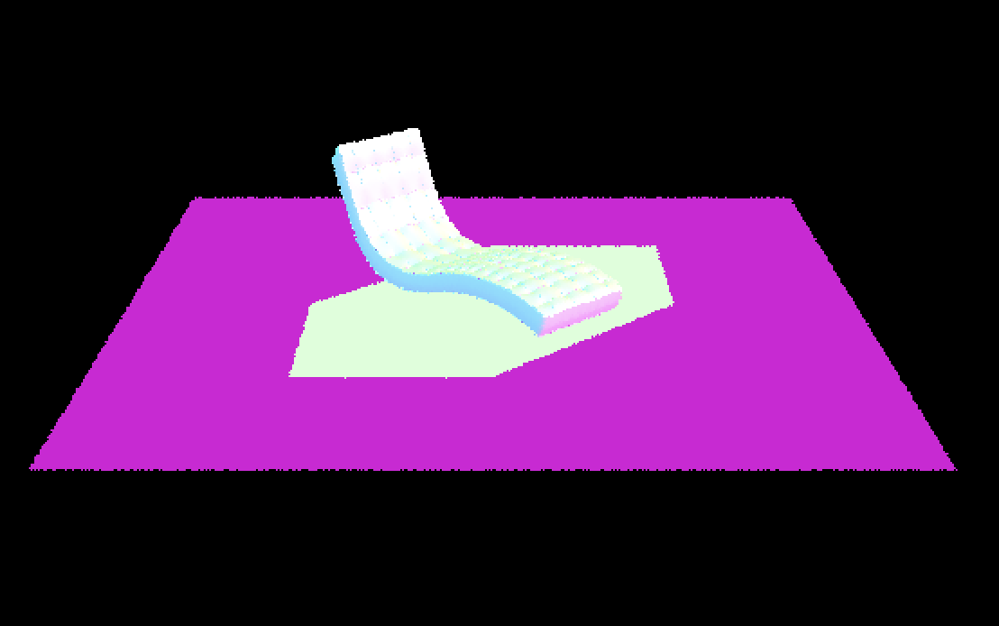
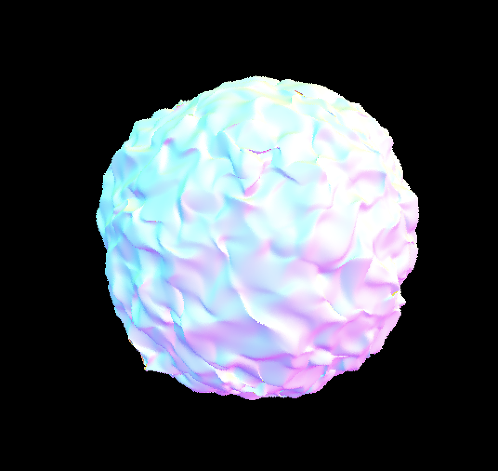
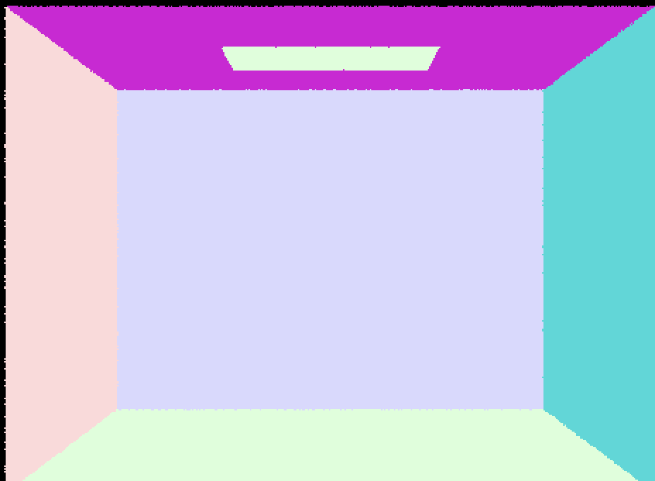

To generate the ray, we took the (x,y) coordinates that were passed in the image coordinates, and transformed it into the camera coordinates by
generating a 3x3 matrix called image_to_camera, vecotorizing our input, and multiplying the matrix by the vector.
The 3x3 matrix image_to_camera contains the following elements {2*hdiff, 0, -hdiff, 0, 2*vdiff, -vdiff, 0, 0, 1} in row-major form where hdiff = tan(radians(hFov) / 2) and vdiff = tan(radians(vFov) / 2).
This matrix allows us to do a scale and translation to convert the image coordinates to camera coordinates.
Since the image coordinates is a 2x1 vector, we need to add an extra coordinate; for this, we simply set the z coordinate of the vector to 1 before doing the matrix-vector multiplication to get a vector called camera_space.
In camera space, we first took the camera_space vector we generated and set the z coordinate to -1, since the spec says the virtual camera sensor lies on z = -1.
We then generated our ray, and then we used the cw matrix to help transform the ray from camera space to world space: {c2w(0,0), c2w(0,1), c2w(0,2), pos.x, c2w(1,0), c2w(1,1), c2w(1,2), pos.y, c2w(2,0), c2w(2,1), c2w(2,2), pos.z, 0, 0, 0, 1}.
The c2w matrix helps us convert from the camera coordinate system to the world coordinate system while pos is the camera position in the world space, and is used to translate our ray.
Finally, after translating the ray from camera space to world space, we will normalize our ray and set the ray's min_t to the nClip and the max_t to fClip.
TODO: Can you be more descriptive for everything? For example, how we normalized the vectors?
You need to take the sum of radiance and then normalize it at the end before updating sampleBuffer.
To generate the pixel samples, we generated `num_samples` random rays by using randomly generated (x,y) coordinates, created normalized vectors, and then
used the generate_ray to generate our ray. After generating the ray, we called est_radiance_global_illumination to estimate the scene radiance along that ray and then
updated the sampleBuffer accordingly.
In order to test for intersection, we used the Moller-Trumbore algorithm by creating the vectors and performing dot products and cross products as described from lecture.
The Moller-Trumbore algorithm finds the barycentric coordinates of the ray if it intersects the triangle.
In order to check if the ray hit the triangle, we checked to see if the b1, b2, and (1 - b1 - b2) coordinates were all greater than or equal to 0.
We then checked if the ray hit the triangle within the min_t and max_t bounds.
If either the first or second check failed, we simply returned false.
Otherwise, we updated the ray's max_t value, and then updated the Intersection attributes and returned true.



To construct the BVH, we first iterate from the start iterator to the end iterator and we count the number of primitives in our iterator as well as add up the centroid of each bbox. After we iterate through the iterator, we initialize a new Node object and we set start and end to the start and end vectors that were passed into the function. At this point, there are two cases:
If we hit this case, it means that we have created a leaf node, and we can just return the Node, since we've properly set up the start and end iterators.
In this case, we need to recurse.
We first find a split point by taking the centroids of all the primitives that we added up previously and dividing it by the number of primitives to get the average.
Afterwards, we found the largest extent of the bounding box for all three axes (x,y, and z), which we will use to compare with coordinates of primitives later.
Since the node we created isn't a leaf node, we will initialize two new vectors: a left vector and the right vector.
From here, we iterate through all the Primitives again, and for each Primitive, we will get the centroid of the Primitive and get the coordinate for whichever axis has the highest extend (for example, if the x axis had the highest extent, we will choose the x coordinate of the centroid of the Primitive).
If the coordinate is less than the coordinate of the split point, we will add this Primitive to the left vector; otherwise, we add it to the right vector.
At the end of the iteration, we should've put all Primitives that have a coordinate less than the split point in the left vector and all the Primitives that have a coordinate more than the split point in the right vector.
Within this case, we also addressed the edge case where all Primitives end up in one vector. In this case, we will use the middle of the vector and everything to the left will be the left vector and everything to the right will be the right vector.
From here we will recurse. We will call construct_bvh and pass in the start and end iterators using the left vector and assign the returned Node to node->l. We will do the same for the right vector and assign the returned Node to node->r .
TODO: add explanation to why the runtime dropped As mentioned in the spec, the ray intersection complexity runs in O(N) time. By adding the BVH acceleration, the complexity drops to O(logN) time. We rendered the Cow, Max Planck, and CBlucy without the BH acceleration in 18.0905s, 173.4054s, and 531.0499s, respectively. With the BVH acceleration, we were able to render the Cow, Max Planck, and CBlucy in 0.0596s, 0.0721s, and 0.0623s, respectively.
We created a for loop to sample `num_samples` times. For each iteration, we use `hemisphereSampler` to uniformly sample incoming ray directions in the hemisphere. To create the ray, we set `hit_p` as the origin and since the vector returned by `get_sample` is in object space, we multiply it by the `o2w` matrix to transform it into world space and set that as the ray’s direction. Following the spec instructions, we set the ray's `min_t` field to EPS_F to alleviate numerical precision issues.
Then, we need to check if the ray intersects a light source using `bvh->intersect`. If it does, then use the reflection equation to calculate how much outgoing light there is. f, which describes how the surface reflects light from an incoming direction to an outgoing direction, is given by `isect.bsdf->f(wj, w_out)`. L is the radiance arriving at hit_p from incoming direction, and that is calculated using `newIsect.bsdf->get_emission()` because it’s direct lighting. cos_theta(wj) is also trivially given using the helper function. Since we uniformly sample in the hemisphere, the pdf is 1/(2π).
We sum the calculated outgoing radiance across these samples and normalize it by dividing by `num_samples`.
The main difference between the two implementations is the importance sampling samples only from lights and not uniformly in a hemisphere. Therefore, we created a for loop to iterate through each light in the scene. If it’s a point light, then we only need to sample once since all samples from a point light will be the same. Otherwise, we want `ns_area_light` samples. We get each sample using `light->sample_L` which gives us the incoming radiance, vector in world space, and the pdf. Then, we convert the vector into object space using the `w2o` matrix. If `z` of the object-space vector is greater than or equal to zero, then it’s in front of the surface at the hit point and will contribute to the lighting. Therefore, we can create a shadow ray similarly using hit_p and the world-space vector. We set `min_t` to EPS_F and `max_t` to distToLight - EPS_F. If this ray intersects the scene, then the hit point is in a shadow with respect to the current light source.
Therefore, we only want to calculate the radiance using the reflectance equation if the shadow ray does not intersect. f and cos_theta are calculated the same way as the uniform hemisphere sampling using the object-space vector. L and pdf are the values given by `sample_L`.
We then sum all of outgoing radiance and normalize it by dividing by the number of samples.
This image is created using 1 light ray and 1 sample per pixel.

This image is created using 4 light rays and 1 sample per pixel.

This image is created using 16 light rays and 1 sample per pixel.

This image is created using 64 light rays and 1 sample per pixel.

With greater number of light rays, the image produced becomes visibly less noisy and has more accurate lighting.
This image is created using uniform hemisphere sampling.

This image is created using importance sampling.

To render these two images, I used the same number of light rays and samples per pixel. As shown, uniform hemisphere sampling created a much more noisy image. This is because it samples the hemisphere uniformly across all directions, including directions where there may be little to no light contribution. On the other hand, importance sampling focuses the sampling on areas that contribute the most to the final result (ie. samples towards directions with light contribution). Additionally, importance sampling can take into account the visibility of light sources and their occlusion by objects in the scene, further improving the accuracy of the final result and reducing noise.
We first calculate the direct lighting using `one_bounce_radiance`. Then, we use `isect.bsdf->sample_f` to get the object-space vector, pdf and the brdf. To create the ray, we set `hit_p` as the origin, and we multiply the object-space vector by the `o2w` matrix to transform it into world space and set that as the ray’s direction. The depth of this ray is set to `r.depth - 1`. If the max_ray_depth > 1, then that means we do want indirect lighting. If the ray intersects the scene and its depth > 0, then we do recursion and use the reflectance equation to calculate the radiance. This is guaranteed to happen for tracing the first indirect bounce. For subsequent ones, we use Russian Roulette to prevent infinite recursion. The continuation probability is set to 0.7. If the coin flip returns true, then we will do the calculation and normalize it by the continuation probability. The sum of the radiance will be all of the indirect lighting.
This image is rendered with global illumination and 1024 samples per pixel.

This image is rendered with direct illumination and 1024 samples per pixel. As shown, we only have the illumination caused by the ceiling light. The ceiling is dark and no reflected lights were accounted for.

This image is rendered with indirect illumination and 1024 samples per pixel. We do not have the illumination directly caused by the ceiling light. Instead, we can see the lights being reflected off the walls. The spheres show the colors of the walls since lights were reflected onto them.

This image is rendered with max_ray_depth set as 0.

This image is rendered with max_ray_depth set as 1.

This image is rendered with max_ray_depth set as 2.

This image is rendered with max_ray_depth set as 3.

This image is rendered with max_ray_depth set as 100.

As the images above shown, we can see the indirect lighting being included in the image as max_ray_depth increases. There's no significant differences with max_ray_depth = 2, 3, 100 because Russian Roulette could terminate before 100 bounces and this is a pretty simple scene, so good results with few bounces are expected.
This image is rendered with 1 sample per pixel.

This image is rendered with 2 samples per pixel.

This image is rendered with 4 samples per pixel.

This image is rendered with 8 samples per pixel.

This image is rendered with 16 samples per pixel.

This image is rendered with 64 samples per pixel.

This image is rendered with 1024 samples per pixel.

As the number of samples increases, the image becomes significantly less noisy/blurry. With more samples, we can render more realistic image with more accurate lighting.
In this part, we implemented adaptive sampling. After implementing Monte Carlo path tracing, our images look a lot more realistic.
However, one of the problems we run into is that the images have a lot of noise.
In order to mitigate these issues, we implemented adaptive sampling. In adaptive sampling, we check to see if the pixel has converged within some confidence interval; if it has converged, then we
don't need to sample the pixel anymore.
These are the following steps we took to implement adaptive sampling:
1: We check to see if I <= maxTolerance * mean where I = 1.96 * std / (square root of n)
where mean and std are the mean and standard deviation of the illuminance from the n samples we've collected so far.
While I > maxTolerance * mean, we check whether a pixel has converged every samplesPerBatch pixels (instead of every sample) until reaching ns_aa samples using the following loop:
2: We will initialize i to 0 and run the inner loop if i < samplesPerBatch and sample_count < num_samples (where sample_count is initialied to 0 outside the inner loop and num_samples = ns_aa), incrementing i by one after each iteration.
3: Similar to Part 1, We will generate a random sample, normalize the vector, and generate a ray based on this sample and estimate the scene radiance along the ray using the est_radiance_global_illumination function.
4: Afterwards, we find the illuminance of the radiance, and we will update s1 and s0 (which were both initialized to 0 outside the outer loop) using the formula on the spec:
s1 = sum from k = 1 to n(x_k) where x_k is the sample's illuminance
s2 = sum from k = 1 to n(x_k ^ 2) where x_k is the sample's illuminance
5: The last thing in the inner loop is to increment sample_count by 1
6: Continuing from the outer loop, we will recalculate the mean, std, and I using the formula on the website:
mean = s1 / sample_count
std = square root of (1 / (n-1) * (s2 - s1 ^ 2/n))
I = 1.96 * std / square root(sample_count)
Lastly, we take the sum of radiance calculated in the loop and normalize it by sample_count before updating the sampleBuffer.